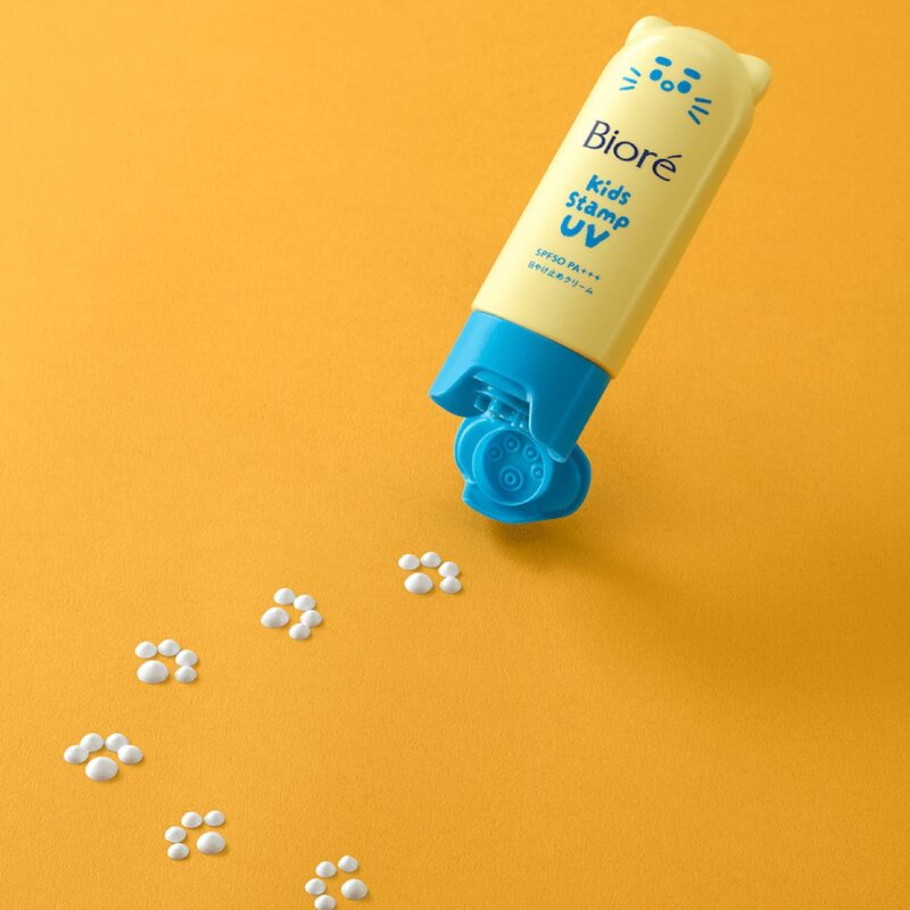

Teardown 08
猫爪印章儿童防晒霜

用户
家长，以及不爱涂防晒、抗拒抹护肤品的小朋友
场景
出门前给孩子涂抹防晒霜，孩子抵触推开、涂抹的动作，不愿意配合
当前方案痛点
普通管状防晒需要手挤、上手涂抹，小孩子觉得黏腻不舒服，抗拒涂抹；家长涂抹麻烦，容易涂不均匀，孩子乱动还会蹭得到处都是
创意方案
把防晒盖子设计成猫爪印章结构，按压就可以挤出防晒膏体，直接在皮肤上盖印，像玩盖章游戏，孩子主动愿意参与，盖完轻轻抹开即可
核心价值
把“被迫护肤任务”转化成趣味小游戏，降低儿童的心理抵触，让家长更容易完成防晒涂抹，同时方便控制用量
方案短板与边界
印章凸起结构容易藏残留膏体，盖子内部容易脏、滋生细菌；单次盖章的防晒量有限，大面积皮肤需要多次盖章；膏体硬度要精准把控，太硬出不来，太软容易流出来
底层设计思想
改造交互形式，将枯燥、抗拒型任务，包装成游戏化操作，利用趣味交互降低用户心理阻力
同思想延伸案例
- 牙膏牙刷玩具套装：刷牙变成角色扮演游戏，引导孩子主动刷牙
- 印章蜡笔：画画盖章二合一，提升儿童绘画兴趣
- 糖果形状维生素片：把吃药变成吃零食，消除吃药抵触
AI 机会迁移
对于用户抗拒、不想执行的任务，把严肃操作转化成趣味交互；不强制用户，用游戏化引导降低使用门槛，提升用户主动使用意愿